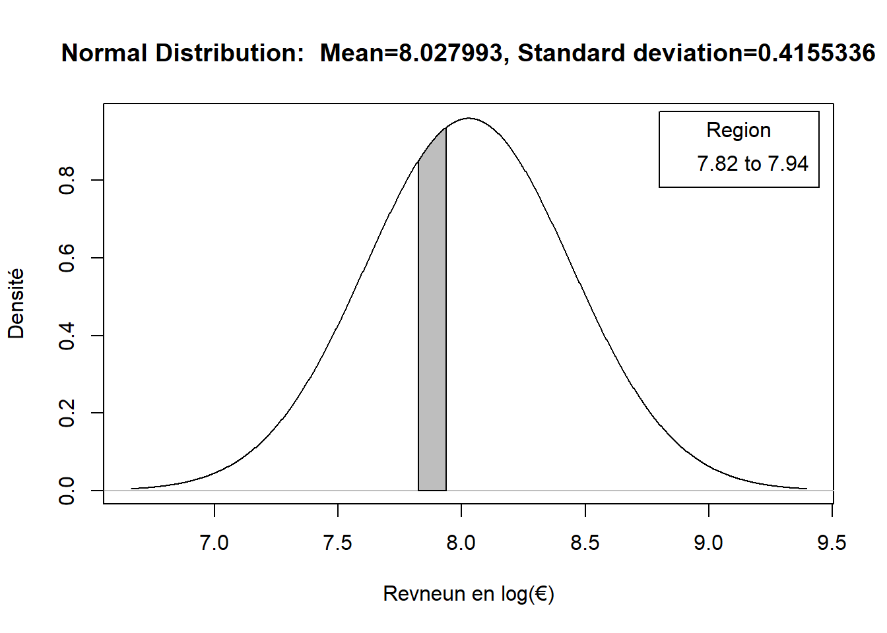

Chapitre 5 Distribution normale et probabilités
La distribution normale a un certain nombre de propriétés très intéressantes. L’une d’entre elles et que lorsqu’on connait la moyenne et la variance/l’écart type (ou qu’on l’estime) d’une distribution normale, l’on peut facilement connaître la probabilité d’obtenir une valeur dans un certain intervalle. On se sert de cette propriété dans la statistique inférentielle (qui vise à apporter des connaissance sur la population et pas seulement sur l’échantillon), car les moyennes d’échantillons d’assez grande taille (\(n>30\)) tirés d’une même population suivent une loi normale (même si la variable étudiée ne suit pas une distribution normale). Cela permet de calculer des invervalles de confiance et le risque de faux-postifs (p-valeur) et de tirer des conclusions sur la population dont est issu l’échantillon27.
5.1 Connaître la probabilité des salaire
La variable log_grspnum que l’on a créé dans le chapitre précédent reprend la transformation logarithmique du revenu mensuel des Belges travaillant à temps plein (\(>34\) heures de travail), sans des valeurs aberrantes (trop faibles pour un travail à temps plein) et des revenus dépassant les \(15.000€\). Cette variable log_grspnum peut être considérée comme suivant une distribution normale. Par conséquent l’on peut facilement déterminer la probabilité qu’un Belge travaillant à temps plein touche un salaire dans un certain intervalle. On peut, par exemple, déterminer quelle est la probabilité de bénéficier d’un revenu supérieur à \(3000€\), inférieur à \(1000€\) ou située entre \(1350€\) et \(1400€\).
R permet de calculer cette probabilité de manière très simple à l’aide de la fonction pnorm(). Celle-ci permet de calculer la probabilité qu’une valeur se trouve dans un certain intervalle, en indiquant la valeur dont on veut connaitre la probabilité, la moyenne, l’écart type et si l’on cherche l’intervalle supérieur ou inférieur à la valeur recherchée. R permet, par ailleurs, de représenter graphiquement assez simple ces intervalles.
Notre exemple comporte une difficulté supplémentaire, car nous avons transformé le salaire avec le logarithme népérien. En effet, nous ne pouvons pas directement indiquer l’intervalle de revenu dont nous souhaitons connaître la probabilité. Il faut que nous transformions le salaire que nous voulons tester à l’aide du logarithme népérien28. Vu que R permet d’imbriquer des fonctions, l’on peut assez facilement surmonter cette difficulté.
Si vous nous voulions connaitre la probabilité de bénéficier d’un revenu supérieur à \(2500€\), nous pouvons le faire ainsi:
pnorm(log(2500), # Le logarithme népérien de 2500
mean = mean(ESS9_BE_fulltime$log_grspnum), #la moyenne de la variable log_grspnum
sd=sd(ESS9_BE_fulltime$log_grspnum),#l'écart type de la variable log_grspnum
lower.tail = F #Nous voulons connaitre la probabilité que la valeur soit au dessus de 2500
)## [1] 0.6882183La probabilité de percevoir un salaire supérieur à \(2500€\) est ecprimé en probabilité: \(0,69\), ce qui correspond à \(69\%\).
Si l’on voulait calculer la probabilité de percevoir un salaire inférieur à \(2500€\), l’on indiquerait le code suivant:.
pnorm(log(2500), # Le logarithme népérien de 2500
mean = mean(ESS9_BE_fulltime$log_grspnum), #la moyenne de la variable log_grspnum
sd=sd(ESS9_BE_fulltime$log_grspnum),#l'écart type de la variable log_grspnum
lower.tail = T #Nous voulons connaitre la probabilité que la valeur soit en dessous de 2500
)## [1] 0.3117817La probabilité de percevoir un salaire inférieur à \(2500€\) est donc de \(0,31\) soit \(31\%\). Vous aurez noté que la probabilité cumulé de percevoir un salaire inférieur à \(2500€\) et supérieur à \(2500€\) est de \(1\) (\(0,69+0,31=1\)). L’on peut utiliser cela pour calculer la probabilité e percevoir un salaire dans un certain intervalle. Si l’on voulait connaître la probabilité de percevoir un salaire supérieur à \(2500€\),mais inférieur à \(2800€\), l’on calcule simplement:
#La probabilité de bénéficier d'un salaire supérieur à 2500 €
proba_sup_2500<-pnorm(log(2500), # Le logarithme népérien de 2500
mean = mean(ESS9_BE_fulltime$log_grspnum), #la moyenne de la variable log_grspnum
sd=sd(ESS9_BE_fulltime$log_grspnum),#l'écart type de la variable log_grspnum
lower.tail = F #Nous voulons connaitre la probabilité que la valeur soit au dessous de 2500
)
#La probabilité de bénéficier d'un salaire inférieur à 2800 €
proba_inf_2800<-pnorm(log(2800), # Le logarithme népérien de 2800
mean = mean(ESS9_BE_fulltime$log_grspnum), #la moyenne de la variable log_grspnum
sd=sd(ESS9_BE_fulltime$log_grspnum),#l'écart type de la variable log_grspnum
lower.tail = T #Nous voulons connaitre la probabilité que la valeur soit en dessous de 2800
)
#La différence entre la probabilité de bénéficier d'un salaire supérieur à 2500 € et la probabilité de bénéficier d'un salaire inférieur à 2800 €
proba_combi_2500_2800<-proba_sup_2500-proba_inf_2800
proba_combi_2500_2800## [1] 0.2745332La probabilité de bénéficier d’un salaire entre \(2500€\) et \(2800€\) est donc de \(0,27\), soit \(27\%\). L’on peut représenter cela de manière visuelle. Par simplicité, nous utilisions le code généré par l’interface graphique “R Commander” (Rcmdr)29. D’autres manière de représenter cela impliquent de combiner, voir d’imbriquer, des fonctions telles que polygon()/geom_polygon(), dnorm() et éventuellement rev() et rep() qui nous semble trop complliqués à expliquer dans ce syllabus. pour utiliser les fonctions issues du package Rcmdr, lancez le ainsi:
p_load(Rcmdr)Ensuite, vous pouvez soit faire les manipulations dans “R Commander” ou utiliser le code dans le R Script . Si vous souhaiter utiliser le code dans le R Script, je vous conseille de fermer la fenêtre du “R Commander” pour que les graphiques générés n’apparaissent pas dans la fenêtre du “R Commander” pas à leur emplacment habituel:
.x <- seq(6.661, 9.395, length.out=1000)
plotDistr(.x,
dnorm(.x,
mean=mean(ESS9_BE_fulltime$log_grspnum),
sd=sd(ESS9_BE_fulltime$log_grspnum)),
cdf=FALSE,
xlab="Revneun en log(€)",
ylab="Densité",
main=paste("Normal Distribution: Mean=8.027993, Standard deviation=0.4155336"),
regions=list(c(log(2500), log(2800))),
col=c('#BEBEBE', '#BEBEBE'),
legend.pos='topright') Grâce à ce graphique l’on voit visuellement où se situent les \(27\%\) de probabilité de pecevoir entre \(2500€et\) rt \(2800€\).
Pour les concepts d’échantillon et de population, d’intervalles de confiance, de p-valeur nous renvoyons aux ouvrages d’introduction aux statistiques. Notons que contrairement à des formulations que l’on peut trouver ça et là, les “vraies” valeurs dans la population sont et restent toujours inconnues. Les estimation que l’on peut obtenir par des procédés mathématiques ne permettent pas de connaître cette “vraie” valeur. L’on peut simplement connaître la probabilité d’obtenir une valeur dans l’intervalle calculé si l’on prend une nouvelle échantillon dans la population.↩︎
Attention: Si nous travaillons avec des données qui ne sont pas transformées, il n’y pas besoin de faire une telle transformation!↩︎
Ce syllabus ne s’attarde pas sur le fonctionemnt de cet interface graphique. Vous trouverez des explications en ligne, notamment: https://lms.fun-mooc.fr/c4x/UPSUD/42001S02/asset/introRcmdr.html↩︎